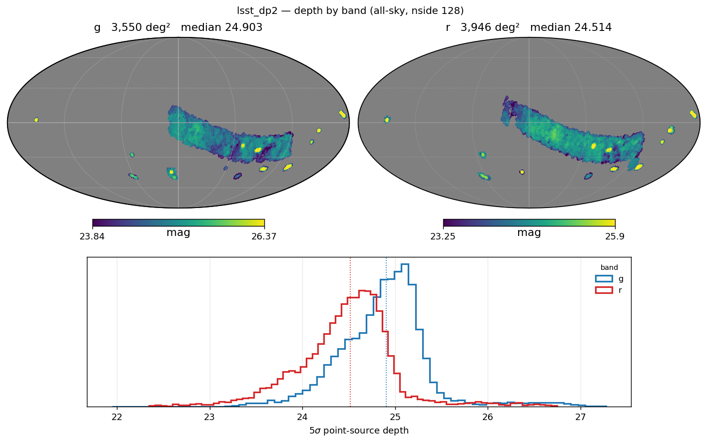
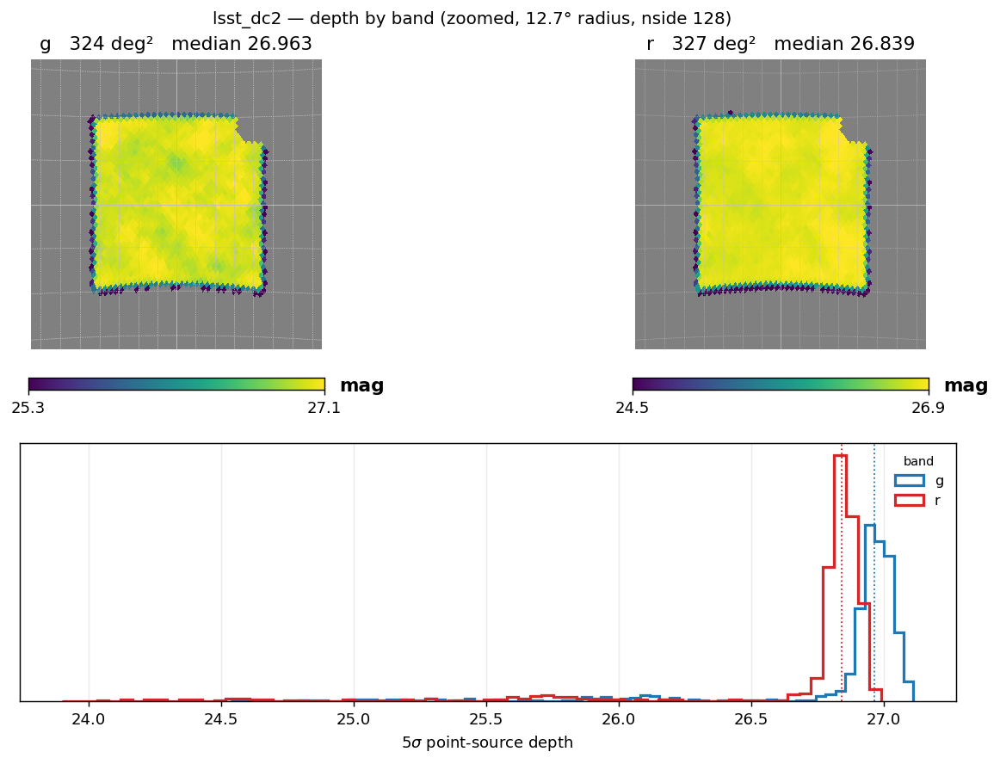
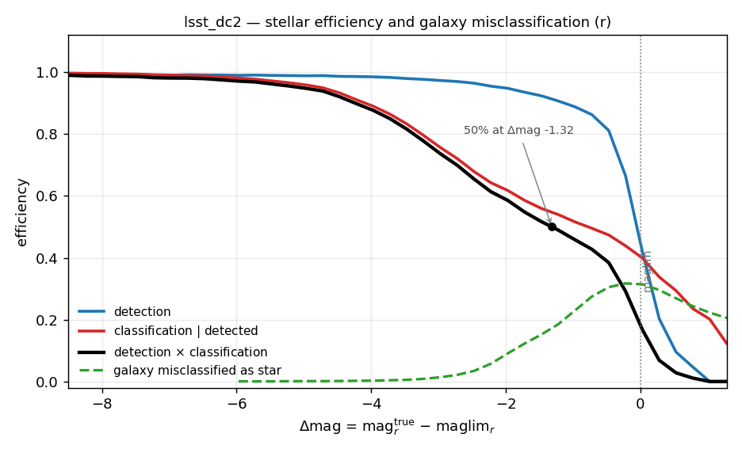
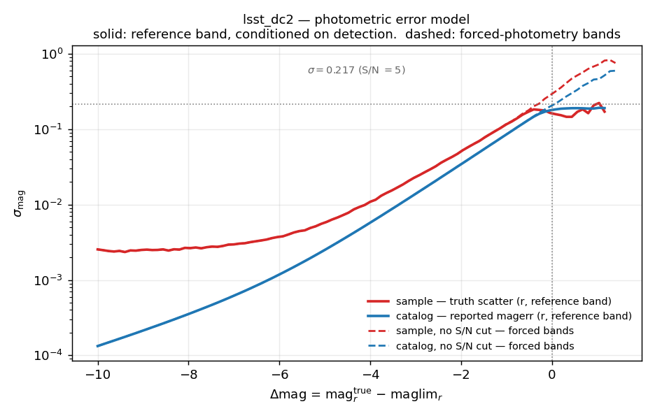

LSST#
LSST is supported by StreamObs. Current estimates of LSST performance are calibrated on DC2 simulations (expected performance for LSST year 5), and extrapolated to years 1 through 5. More information about the underlying LSST simulations can be found in Pélissier et al. (2026).
Available releases#
release |
bands |
footprint |
reference band |
median reference-band depth |
|---|---|---|---|---|
|
g, r |
~327 deg² (DESC DC2 Run 2.2i region) |
r |
26.839 |
|
g, r |
~27,800–39,900 deg² depending on year and band (see Depth and bands) |
r |
25.544 (yr1) – 26.408 (yr4); 26.308 (yr5) |
|
g, r |
g 3,550 deg², r 3,946 deg² (84.1% overlap) |
r |
24.514 |
Products#
File(s) |
Contents |
Drives |
|---|---|---|
|
HEALPix 5σ point-source depth map, one file per band |
|
|
|
|
|
|
reference-band (r) magnitude noise draw / reported-error S/N cut |
|
same columns, no S/N selection applied |
every other configured band (forced photometry) |
|
|
compact-galaxy contamination rate (informational; not yet consumed by the injector) |
|
E(B−V) HEALPix map, shared across releases |
|
All three release families (dc2, yr1…yr5, dp2) share the same
completeness, photo-error, and galaxy-misclassification tables above — only
the depth map differs. See Creation for how that sharing is
implemented.
Depth and bands#
lsst/dc2 — lsst_dc2_maglim_{g,r}_nside128.fits.gz, HEALPix at
nside 128, median depth r = 26.839, g = 26.963 over ~327 deg² (the DESC
DC2 Run 2.2i footprint).
As of 2026-09 this map is not truth-anchored. It ships on its native reported-error S/N = 5 scale (previously it was truth-anchored, with an r-band median of 26.517). See Validation below for why this changed.
lsst/yr1 … yr5 — baseline_v5.0.0_year_{N}.0_band_{g,r}_nside_128.hsp,
HealSparse at nside 128, RubinSim baseline v5.0.0 per year:
year |
g median |
g footprint |
r median |
r footprint |
|---|---|---|---|---|
1 |
25.485 |
27,822 deg² |
25.544 |
27,884 deg² |
2 |
25.857 |
31,317 deg² |
26.016 |
27,943 deg² |
3 |
26.166 |
27,931 deg² |
26.268 |
28,016 deg² |
4 |
26.312 |
27,977 deg² |
26.408 |
28,044 deg² |
5 |
26.427 |
27,999 deg² |
26.308 |
39,875 deg² |
Footprint and median depth do not grow strictly monotonically per band per
year (notably g in year 2 and r in year 5) — this reflects RubinSim’s own
per-year scheduler allocation across the WFD and mini-surveys, not a data
error. Per-year depth maps are also plotted individually:
../_static/lsst_yr{1,2,3,4,5}/lsst_yr{N}_depth.png.
lsst/dp2 — dp2_deepCoadd_psf_maglim_consolidated_map_weighted_mean_{g,r}_nside_128.hsp,
HealSparse at nside 128. This is degraded (mean reduction) from a native
nside-512 source map whose own medians are g = 24.925 over 3,388 deg², r =
24.544 over 3,759 deg². Degrading to the shipped nside-128 map moves the
medians down 0.02–0.03 mag and grows the footprint ~5% (coarse pixels that
were only partially covered become fully valid, and averaging pulls in
shallower edge pixels — both are expected): the shipped map’s median depth is
g = 24.903 over 3,550 deg², r = 24.514 over 3,946 deg², overlapping on 84.1%
of the larger. streamobs handles this per band through the individual maglim
maps, so the usable two-band area is the intersection rather than either
number above.

Not truth-anchored. There is no injection catalogue for DP2, so there is nothing to anchor against, and the maps ship on their own native 5σ scale — the same footing as
lsst/dc2above, and unlike DES and DELVE, whose absolute scales are set from their injections. The absolute depth scale is therefore inherited from whoever produced the maps rather than measured here.

LSST 5σ limiting magnitude maps in the g and r bands for Year 1 and Year 4 survey configurations.
Band coverage. All releases are configured with bands: [u, g, r, i, z, y]
(used for extinction, see Extinction coefficients),
but only g and r ship maglim maps and selection-function curves. get_maglim,
get_completeness, and get_photo_error are only usable for g and r unless
additional per-band depth maps are supplied.
Photometric errors#
The reference band is r (completeness_band: r). Survey.get_photo_error
carries two pairs of delta_mag, log_mag_err curves and picks between them
automatically:
For the reference band (r): the sample curve (
lsst_dc2_photoerror_r.csv, truth-based scatter of obs − true — drives the per-source noise draw) and the catalog curve (lsst_dc2_photoerror_r_catalog.csv, median reportedmagerr— drives the S/N cut). Both are measured on the S/N > 5 detected population, because that is the population the reference-band curve is applied to.For every other band (u, g*, i, z, y — forced photometry from the r-band detection): the
_nocutpair (lsst_dc2_photoerror_r_nocut.csv,lsst_dc2_photoerror_r_catalog_nocut.csv), measured with no S/N selection, because a non-reference band’s photometry is not conditioned on detection in that band. Using the detected-population curve there would understate the errors.
Call survey.get_photo_error(band, mag, maglim, kind="sample"|"catalog");
StreamObs resolves the correct pair from band and raises ValueError
if the _nocut curve a non-reference band needs is not loaded, rather than
silently falling back to the reference-band curve.
* only g and r have shipped maglim maps at all (see
Depth and bands), so g is the only “other band” currently
usable end-to-end; the _nocut mechanism itself is generic to any additional
band a maglim map is supplied for.
See Photometric-error derivation for how these curves were built.
Extinction coefficients#
Dust extinction is modeled using the Schlegel et al. (1998) reddening maps.
The adopted extinction coefficients are
Filter |
A_band / E(B−V) |
|---|---|
g |
3.66 |
r |
2.70 |
These values are used to compute
and are applied consistently when generating observed magnitudes.
Using it in streamobs#
Configured by config/surveys/lsst_{releases}.yaml, data in data/surveys/lsst_{releases}/:
from streamobs.surveys import SurveyFactory
survey = SurveyFactory.create_survey(
"lsst",
release="yr1"
)
maglim = survey.get_maglim("r", pixel=pix)
completeness = survey.get_completeness(
"r",
mag,
maglim
)
photo_error = survey.get_photo_error(
"r",
mag,
maglim
)
Caveats#
Selection functions are derived from a limited DC2 calibration region and extrapolated across the full footprint through the local magnitude-limit parameterization.
Survey systematics are modeled primarily through depth variations; PSF variations are not explicitly included.
DC2 simulations correspond to 5 years of observation with LSST, so releases beyond year 5 (up to the full 10-year survey) cannot be extrapolated.
lsst/yr1…yr5andlsst/dp2reuse thelsst/dc2completeness, misclassification, and photo-error curves unchanged (only the depth map differs). This is a stronger assumption fordp2, which is real commissioning data, than for the year releases, which apply DC2 curves to another simulation (RubinSim): using DC2 curves for DP2 additionally assumes the simulated detection and star/galaxy performance describes the real pipeline. The curves aredelta_mag-keyed, so the depth difference is already accounted for; what is assumed is the shape of the efficiency and error curves at fixeddelta_mag. Treat DP2 completeness as indicative until it can be checked against real DP2 injections or an external truth catalogue.get_photo_errorreturnsNaNfor magnitudes brighter than the configured saturation limit (16.0 mag) — the curves do not model the saturation regime.
Creation#
How the survey was simulated#
All quantities are measured from the LSST Dark Energy Science Collaboration Data Challenge 2 (DC2) simulations, a realistic realization of the expected Rubin LSST survey performance based on five years of observations. DC2 contains both truth and measured catalogs, enabling direct characterization of survey selection effects and photometric performance.
The truth catalog contains intrinsic object properties including noiseless magnitudes, positions, and morphological parameters. Galaxies are drawn from the cosmoDC2 catalog while stars are generated from the Galfast Milky Way model. Measured catalogs are produced by passing these objects through the full LSST image simulation and data reduction pipeline, including realistic observing conditions, instrumental effects, object detection, and photometric measurements. Objects in the measured catalog are matched to their truth counterparts through positional associations, allowing direct estimation of photometric uncertainties, detection efficiencies, and classification performance.
The lsst/yr1…yr5 releases pair this DC2-derived selection function with
RubinSim baseline per-year depth maps; lsst/dp2 pairs it with DP2’s own
measured depth. Both are produced by
scripts/lsst/link_lsst_yr_products.py, which symlinks the efficiency,
misclassification, and both photo-error pairs (including the _nocut curves)
from data/surveys/lsst_dc2/ — only the depth map is release-specific.
Derivation script for lsst/dc2 itself:
scripts/lsst/create_streamobs_files_lsst_dc2.py.
Depth-map derivation#
Depth maps describe the spatial variation of the LSST 5σ limiting magnitude across the survey footprint.
For lsst/dc2, magnitude limits are obtained from RubinSim
and propagated to StreamObs as HEALPix maps. Survey systematics are modeled
through spatial variations in these limiting magnitudes, which drive both
photometric uncertainties and selection functions. As of 2026-09 the DC2 map
is built on its native reported-error S/N = 5 scale rather than
truth-anchored (see Validation).
For lsst/dp2, the map is DP2’s own measured 5σ PSF magnitude limit from the
consolidated survey-property maps (deepCoadd), HealSparse degraded from
nside 512 to nside 128 by scripts/lsst/build_dp2_maglim_maps.py (mean
reduction, the same reduction the Balrog reducer applies).
Star/galaxy classification#
The stellar selection function is estimated from matched truth and measured
catalogs using the distance to the local magnitude limit, while the
classification efficiency measures the fraction of detected stars classified
as point sources using the LSST EXTENDEDNESS classifier.
The combined efficiency is the product of the detection and classification efficiencies and is used by StreamObs to probabilistically determine whether injected stars are observed.
Compact galaxies can be incorrectly classified as stars, producing an important contaminant population for stellar-stream analyses. The galaxy contamination model is derived from true galaxies with
for which morphological star-galaxy separation becomes challenging near the survey magnitude limit.

Detection efficiency, stellar classification efficiency, combined stellar efficiency, and galaxy contamination efficiency as a function of distance to the local magnitude limit.
Photometric-error derivation#
The error model for LSST is taken from Tsiane et al. 2025. It is derived directly from matched DC2 truth catalogs and parameterized as a function of distance to the local magnitude limit,
The photometric scatter increases rapidly near the magnitude limit and approaches a systematic floor of approximately 0.005 mag for bright sources.

Photometric uncertainty as a function of distance to the local magnitude limit. An analytic approximation not used in StreamObs is overlaid on the DC2-derived model.
Validation#
The rebuilt native-scale (non-truth-anchored) lsst/dc2 depth map and
catalog photo-error curve were checked against the independent external
calibration of Tsiane et al. (2025): the
median ratio between the two is 1.0011 (0.1% agreement) over
delta_mag ∈ [-5, -0.25], with no shift applied to the map. Under the
previous truth-anchored convention this ratio was 1.335. This 0.1% agreement
is the evidence that grounds keeping lsst/dc2 on the native pipeline scale
rather than truth-anchoring it (contrast with Roman DC2, which remains
truth-anchored — see Roman). Detection+classification efficiency vs.
true magnitude is unaffected by the change (identical values at fixed true
magnitude) — only the delta_mag zero point moved.
Derivation-level limitations#
Deriving a DP2-native selection function would require an injection run; the
dp2_star_gmax_27_skim.parquetskim shipped alongside the DP2 depth maps cannot substitute, because without a truth table there is no detection efficiency and no truth-scatter curve to measure.